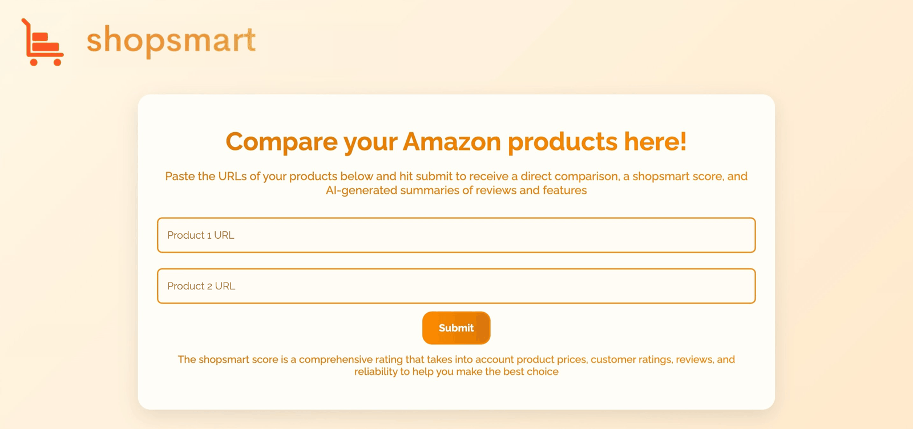

100+ user surveys identified a real, unmet need. I built and shipped an AI-powered comparison tool to solve it — solo, from first interview to final iteration. This project shows how I think and work when there's no team, no roadmap, and no safety net.
Amazon has filters. It doesn't have synthesis. A 4.3-star product with 40 reviews and a 4.3-star product with 14,000 reviews look identical — but they're completely different buying propositions. Users were opening 6 tabs to make a decision that should take 30 seconds.
100+ surveys confirmed it: 72% spent too much time comparing products, 54% couldn't reliably interpret rating vs. review volume, 45% said they spent too long reading reviews. The problem wasn't data. It was judgment.

Two Amazon URLs in. One clear recommendation out. The tool gives users what filters can't: a verdict.
15+ testers across 4 major iterations. Each round surfaced a clear signal:
Slow processing → Rebuilt to parallel scraping + dynamic loading state. Perceived wait dropped significantly.
Opaque scores → Added an explanation of the scoring weights. Users don't trust numbers they can't interrogate.
No recommendation → Added the recommended pick with written rationale. The whole point of the tool is to make a call.
Visual credibility → Full redesign pass. When you're asking someone to trust an algorithm with a purchase decision, aesthetics are a trust signal.
A working, validated product — built solo, iterated on real feedback, and shipped. The process is what matters here: I ran research, identified a problem worth solving, scoped an MVP, built it, put it in front of users, and kept improving it based on what they told me. That loop is the job.